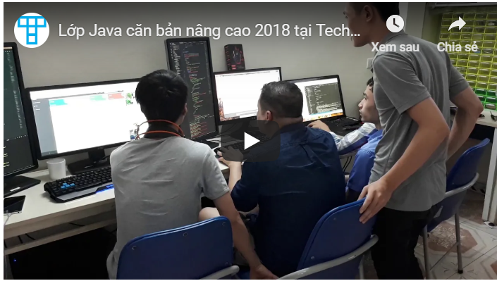

Giới thiệu
Khóa học lập trình Java cơ bản. Mỗi bài học là một ví dụ cụ thể. Học viên có toàn bộ mã nguồn và được hướng dẫn từng bước để thực hiện. Học viên đăng ký học được xem học liệu vĩnh viễn. Khóa học liên tục được cập nhật bài giảng mới, công nghệ mới khi cần thiết.
7 điểm nổi bật của khoá học:
- Video chất lượng cao, mã nguồn minh hoạ được kiểm thử có trắc nghiệm để sinh viên tự kiểm tra kiến thức.Xem vĩnh viễn !
- Nhiều video bonus nâng cao, liên tục cập nhất hàng tháng. (khoá học khác được làm từ 2015 !)
- Cập nhật tính năng mới nhất của Java 8, 9, 10: Lambda Expression, JShell, Interface API (các khoá học Java trên mạng chỉ cập nhật đến Java 6 hoặc 7)
- Dạy lập trình hướng đối tượng kỹ và dễ hiểu, nhiều ví dụ minh hoạ
- Dạy cả Design Pattern. (Các khoá học khác không dạy !)
- Có video hướng dẫn lập trình giao diện Java FX (form, vẽ đồ thị). Rất cần cho sinh viên làm đồ án tốt nghiệp
- Hướng dẫn lập trình kết nối cơ sở dữ liệu MySQL, JDBC. Rất cần để học lên lập trình Java Spring
- Nhiều video bonus nâng cao, liên tục cập nhất hàng tháng. (khoá học khác được làm từ 2015 !)
- Cập nhật tính năng mới nhất của Java 8, 9, 10: Lambda Expression, JShell, Interface API (các khoá học Java trên mạng chỉ cập nhật đến Java 6 hoặc 7)
- Dạy lập trình hướng đối tượng kỹ và dễ hiểu, nhiều ví dụ minh hoạ
- Dạy cả Design Pattern. (Các khoá học khác không dạy !)
- Có video hướng dẫn lập trình giao diện Java FX (form, vẽ đồ thị). Rất cần cho sinh viên làm đồ án tốt nghiệp
- Hướng dẫn lập trình kết nối cơ sở dữ liệu MySQL, JDBC. Rất cần để học lên lập trình Java Spring
Giảng viên:
- Nguyễn Đức Hoàng: 11 năm phát triển phần mềm, hiện đang tự phát triển kênh youtube chia sẻ kiến thức lập trình với hơn 700 videos (giảng bằng tiếng Anh và tiếng Việt).
- Lớp Java được đào tạo dưới 2 mô hình : Lớp học trực tuyến đăng ký ngay xem video bài giảng và lớp học phòng lab học trực tiếp tại trung tâm Techmaster. ( Lưu ý : Nội dung lớp học onlab học thực hành, ví dụ trực quan và vận dụng thực tế. Đảm bảo kiến thức nền tảng sau mỗi khóa học)
Link group facebook:
https://www.facebook.com/groups/554817598286642

- Lớp Java được đào tạo dưới 2 mô hình : Lớp học trực tuyến đăng ký ngay xem video bài giảng và lớp học phòng lab học trực tiếp tại trung tâm Techmaster. ( Lưu ý : Nội dung lớp học onlab học thực hành, ví dụ trực quan và vận dụng thực tế. Đảm bảo kiến thức nền tảng sau mỗi khóa học)
Link group facebook:
https://www.facebook.com/groups/554817598286642
Phương pháp học
- Học viên có tài khoản riêng để truy cập vào hệ thống đào tạo trực tuyến của Techmaster. Khóa học có nhiều section, mỗi section có nhiều lesson là một video khoảng 7-15 phút hướng dẫn thực hành. Sau mỗi video là 4-5 câu hỏi quiz.- Các lesson về sau thường là bài tập lập trình: hoàn thiện một ứng dụng cụ thể, hoặc fix lỗi các đoạn code cụ thể để rèn luyện tư duy đọc mã nguồn của học viên.